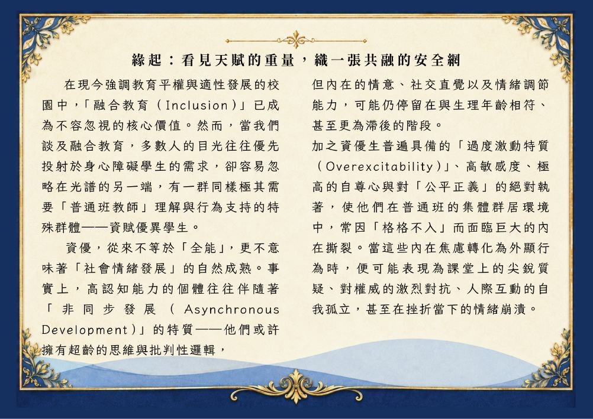
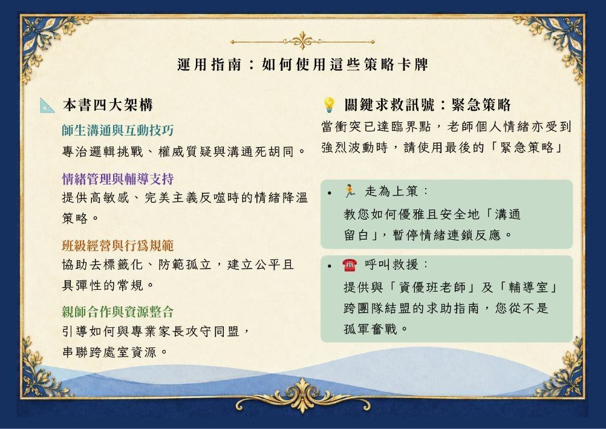
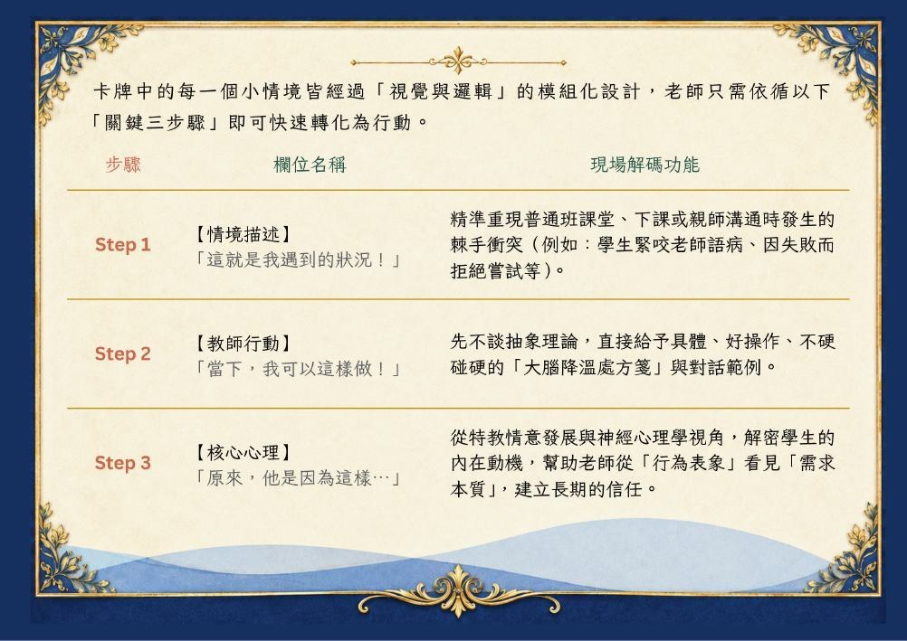

普特融合 · 教育實務章節閱讀版
INTRODUCTION / 閱讀起點
緣起與運用指南
看見天賦的重量，織一張共融的安全網。
內容分析
從處理行為，走向理解需求
本書以普通班的實務現場為出發點，將師生互動、情緒支持、班級常規與親師資源串在一起。資優能力不代表所有發展都同步，也不代表不需要輔導；教師的彈性理解與適時引導，是學生融入班級的重要支持。
01
辨識情境
對照眼前發生的衝突、挫折或互動困難。
02
採取行動
先使用具體、可操作的處理方式與對話。
03
理解核心心理
從行為背後看見需求，逐步建立長期信任。
如何使用策略牌卡
原書建議依序閱讀「情境描述 → 教師行動 → 核心心理」，將現場問題轉化成具體行動。四大主題之外，最後兩張牌卡提供衝突升溫或教師需要支持時的緊急策略。
原書第 5 頁
已對照原頁校對，按原文閱讀順序整理
緣起：看見天賦的重量，織一張共融的安全網
在現今強調教育平權與適性發展的校園中，「融合教育（Inclusion）」已成為不容忽視的核心價值。然而，當我們談及融合教育，多數人的目光往往優先投射於身心障礙學生的需求，卻容易忽略在光譜的另一端，有一群同樣極其需要「普通班教師」理解與行為支持的特殊群體——資賦優異學生。
資優，從來不等於「全能」，更不意味著「社會情緒發展」的自然成熟。事實上，高認知能力的個體往往伴隨著「非同步發展（Asynchronous Development）」的特質——他們或許擁有超齡的思維與批判性邏輯，但內在的情意、社交直覺以及情緒調節能力，可能仍停留在與生理年齡相符、甚至更為滯後的階段。
加之資優生普遍具備的「過度激動特質（Overexcitability）」、高敏感度、極高的自尊心與對「公平正義」的絕對執著，使他們在普通班的集體群居環境中，常因「格格不入」而面臨巨大的內在撕裂。當這些內在焦慮轉化為外顯行為時，便可能表現為課堂上的尖銳質疑、對權威的激烈對抗、人際互動的自我孤立，甚至在挫折當下的情緒崩潰。
查看原始頁面 · PDF 第 5 頁

原書第 6 頁
已對照原頁校對，按原文閱讀順序整理
面對這樣的特質，若僅以傳統威權式的「上對下」規範或無彈性的「公平比較」來進行班級經營，不僅無法化解衝突，反而容易激發資優生強烈的防衛機制，造成師生關係的決裂與同儕的對立。普特融合的重要性，正是在於打破「資優生不需要輔導」的迷思。普通班是資優生進行社會化、學習人際共好最關鍵的真實場域。一位導師的彈性理解與適時引導，影響資優生能否在班級中展現天賦與領導力、或是被貼上「怪胎」標籤的關鍵。
然而，我們深知普通班老師在日常繁重的教學行政與多元的學生需求中，往往處於心力交瘁的邊緣。當面對資優生突如其來的社會及情緒問題時，教師需要的不是繁複的特教學術理論，而是能夠迅速指引行動的「實務指南」與「情緒OK繃」。
這本小書的誕生，正是基於這樣的編輯動機。我們不希望給老師更多教條式的限制，而是期盼透過具體的現場情境，為普通班老師解碼資優生「不可理喻」背後的「核心心理」。藉由親師生系統的重新串聯，我們希望能為普通班老師搭建一座有力的專業後盾。讓老師在面對挑戰時有據可依、在心力交瘁時能呼叫救援，共同在普通班這片多元的土壤裡，為孩子們撐開一個容許失敗、接納差異，最終達成「師生共好」的溫暖環境。
查看原始頁面 · PDF 第 6 頁
原書第 7 頁
已對照原頁校對，按原文閱讀順序整理
運用指南：如何使用這些策略卡牌
本書四大架構
師生溝通與互動技巧
專治邏輯挑戰、權威質疑與溝通死胡同。
情緒管理與輔導支持
提供高敏感、完美主義反噬時的情緒降溫策略。
班級經營與行為規範
協助去標籤化、防範孤立，建立公平且具彈性的常規。
親師合作與資源整合
引導如何與專業家長攻守同盟，串聯跨處室資源。
關鍵求救訊號：緊急策略
當衝突已達臨界點，老師個人情緒亦受到強烈波動時，請使用最後的「緊急策略」
走為上策：
教您如何優雅且安全地「溝通留白」，暫停情緒連鎖反應。
呼叫救援：
提供與「資優班老師」及「輔導室」跨團隊結盟的求助指南，你從不是孤軍奮戰。
查看原始頁面 · PDF 第 7 頁

原書第 8 頁
已對照原頁校對，按原文閱讀順序整理
卡牌中的每一個小情境皆經過「視覺與邏輯」的模組化設計，老師只需依循以下「關鍵三步驟」即可快速轉化為行動。
步驟／欄位名稱／現場解碼功能
Step 1 【情境描述】
「這就是我遇到的狀況！」
精準重現普通班課堂、下課或親師溝通時發生的棘手衝突（例如：學生緊咬老師語病、因失敗而拒絕嘗試等）。
Step 2 【教師行動】
「當下，我可以這樣做！」
先不談抽象理論，直接給予具體、好操作、不硬碰硬的「大腦降溫處方箋」與對話範例。
Step 3 【核心心理】
「原來，他是因為這樣…」
從特教情意發展與神經心理學視角，解密學生的內在動機，幫助老師從「行為表象」看見「需求本質」，建立長期的信任。
查看原始頁面 · PDF 第 8 頁
